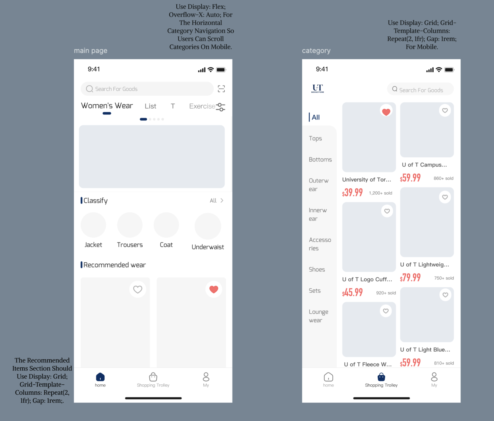
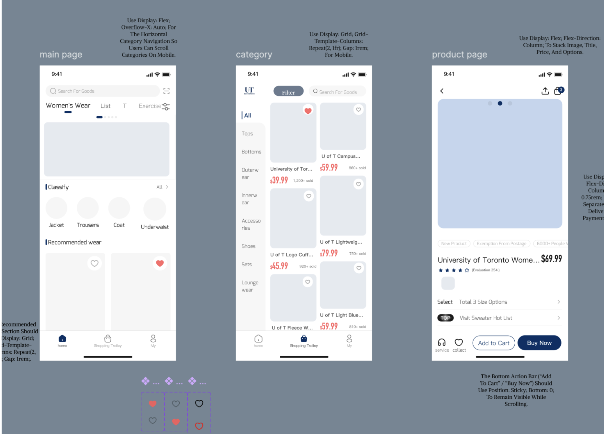

The challenge
1. Category browsing pulls users away from the products
The category and filter system is comprehensive, but unclear labels make it hard to use. Clicking a category also sends users to a separate page, so they cannot see products while they browse categories. This breaks two of Nielsen's heuristics: Flexibility and Efficiency of Use, and Match between System and the Real World.
2. Saving a product takes an extra step
"Add to Wishlist" only exists on the individual product page. Users cannot save items from the home page or category pages, which interrupts browsing and raises the interaction cost for anyone comparing several items. This also breaks Flexibility and Efficiency of Use.

The solution
1. Categories on the homepage, filters on the listing
We redesigned both the homepage and the category page. Users can reach categories straight from the homepage. On the new category page they can apply filters and switch categories without leaving the product listing, so browsing and comparing stay continuous.

2. A wishlist heart on every product card
A heart icon now sits at the top of each product card. Users add items to their wishlist rigSOht from the listing, without opening the product page. That removes unnecessary navigation for people comparing products.

Results and key outcomes
The redesign was delivered as an interactive Figma prototype covering the new homepage, category page and product cards.
Users can now switch categories and apply filters without leaving the product list, and save products to their wishlist in one click from the listing. Both changes target the two heuristic problems we found in the audit.